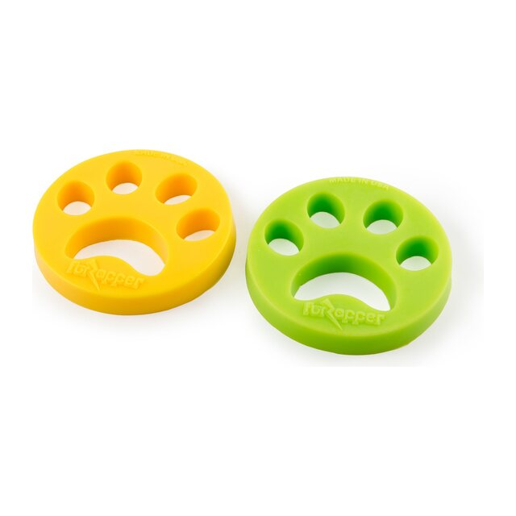
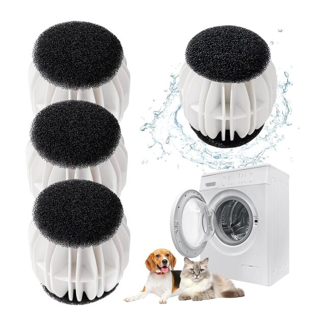

Meilleur choixFurZapper
Pour les foyers qui lavent souvent plaids, couvertures et vêtements pleins de poils.
- Disque en silicone collant qui attrape les poils
- Fonctionne au lavage et au séchage
Plaids, housses, vêtements : quelques accessoires glissés dans le tambour attrapent une bonne partie des poils pendant le lavage et le séchage.

Meilleur choixPour les foyers qui lavent souvent plaids, couvertures et vêtements pleins de poils.

Petit budgetPour un petit coup de pouce à petit prix sur le linge du quotidien.
Pour nettoyer la machine après le lavage d'un panier, d'un coussin ou d'une couverture très chargée.
Liens affiliés : si vous achetez via eux, nous touchons une petite commission, sans surcoût pour vous. Cela ne change ni l'ordre ni l'avis.
| Modèle | Idéal pour | Lavage / séchage | Réutilisable | Prix | Acheter |
|---|---|---|---|---|---|
| FurZapper | Meilleur choix | Les deux | Oui | € | Voir sur Amazon |
| Balles anti-poils | Petit budget | Selon modèle | Oui | € | Voir sur Amazon |
| Sachets nettoyants pour tambour | Tambour | Lavage | Non | € | Voir sur Amazon |
Pour qui : les foyers qui lavent souvent plaids, couvertures et vêtements pleins de poils.
Pour qui : un petit coup de pouce à petit prix sur le linge du quotidien.
Pour qui : nettoyer la machine après le lavage d'un panier, d'un coussin ou d'une couverture très chargée.
Le meilleur accessoire ne fait pas tout : enlever le gros des poils avant le lavage et nettoyer le filtre comptent autant.
| Critère | Ce qu'il faut vérifier | Pourquoi c'est important |
|---|---|---|
| Lavage et séchage | L'accessoire supporte-t-il le sèche-linge ? | C'est au séchage que beaucoup de poils se détachent. |
| Réutilisable | Sans recharge ou à usage unique | Un outil réutilisable revient bien moins cher à l'année. |
| Taille de la charge | Nombre d'accessoires par cycle | Sur une grosse charge, il en faut souvent deux. |
| Entretien du filtre | Accès facile au filtre de vidange | Les poils finissent là : un filtre bouché fait mal vidanger la machine. |
Les poils se redéposent sur tout le linge et bouchent le filtre.
Lavez les plaids et paniers à part.
C'est là que s'accumulent les poils, cycle après cycle.
Il est conçu pour tourner avec le linge, mais évitez-le avec les tissus très délicats.
Elles aident sur le linge du quotidien, mais retirent moins de poils qu'un disque collant.
Oui si l'étiquette le permet : enlevez le gros des poils avant et lavez-le seul.
Nous comparons les fiches des fabricants, les notices et les retours de propriétaires, en privilégiant ce qui supprime réellement une tâche plutôt que les chiffres marketing. Aucune marque ne paie pour figurer ici. Lire notre méthode.